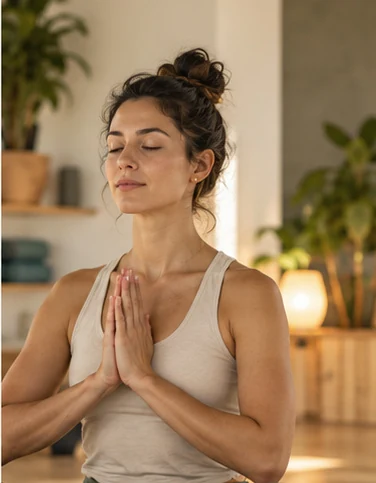
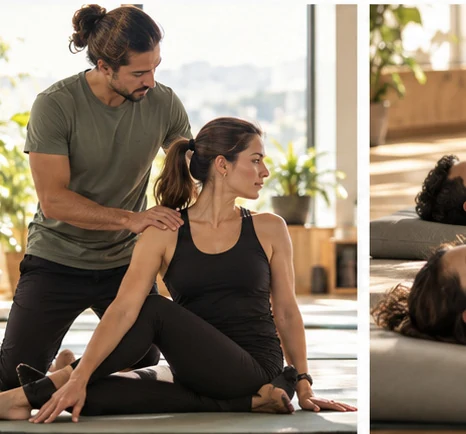
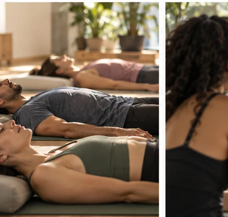
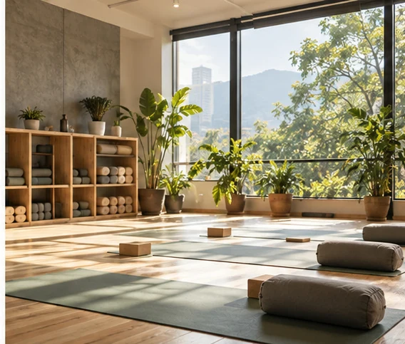

01 / BIENVENIDA
Un lugar para empezar.
Opciones para acercarte al yoga sin necesitar experiencia previa.
YOGA Y BIENESTAR · CIUDAD DE GUATEMALA
Empieza desde cero, sin presión y a tu propio ritmo.
Una manera más cercana de explorar el yoga, hacer una pausa y volver a conectar con tu bienestar cotidiano.

No necesitas llegar sabiendo. Solo encontrar tu propio ritmo.
Así puedes comenzar01 / NUESTRA FILOSOFÍA
En ZenFlow creemos que la práctica se construye a tu ritmo. Un espacio para aprender, explorar y moverte sin comparaciones.
Descubre tu primer pasoOpciones para acercarte al yoga sin necesitar experiencia previa.
Explora diferentes modalidades y encuentra la que más te interese.
Una invitación a integrar el bienestar a tu rutina cotidiana.
02 / ENCUENTRA TU FLUJO
Distintas formas de vivir el yoga. Descubre la experiencia que quieres explorar y consulta cuál es apropiada para ti.

01Aprende lo esencial y descubre la práctica sin presiones ni comparaciones.
Consultar esta clase
02Una propuesta de movimientos suaves y pausados para explorar el descanso.
Consultar esta clase 03
03Alternativas para explorar movimiento dinámico y progresión acompañada.
Consultar esta claseMomentos para prestar atención a la respiración y estar presente.
Consultar esta claseContenido ilustrativo para el caso académico. Horarios, tarifas y modalidades disponibles deben confirmarse con la marca.
03 / TU PRIMERA EXPERIENCIA
No necesitas conocer todas las posturas. Solo tener curiosidad y espacio para hacer preguntas.
Conoce cómo empezarExplora las modalidades y piensa qué experiencia te gustaría probar.
Pregunta qué necesitas saber antes de tu primera visita.
Confirma con el estudio los detalles reales antes de asistir.

04 / UN ESPACIO PARA VOLVER A TI
La idea de ZenFlow combina un ambiente acogedor, propuestas de movimiento consciente y una comunicación que da la bienvenida a quienes comienzan.
«Tu práctica, a tu ritmo»— Territorio verbal conceptual ZenFlow
05 / RESPUESTAS A TU RITMO
Resolvemos algunas dudas habituales para que puedas explorar la práctica con más confianza.
No. El caso ZenFlow incluye yoga para principiantes. Los detalles de cada clase deben confirmarse antes de asistir.
La flexibilidad no es un requisito para interesarse por el yoga. Consulta con el instructor las adaptaciones disponibles.
Explora las modalidades y comparte lo que te gustaría experimentar. El estudio podrá orientarte cuando estén confirmados sus servicios reales.
El caso académico no incluye todavía tarifas ni horarios verificados. No se muestran datos inventados.
El escenario de la marca está situado en Zona 10, Ciudad de Guatemala. La dirección específica está pendiente de validación.
FORMULARIO DE DEMOSTRACIÓN
Utiliza datos ficticios. Esta es una maqueta de aprendizaje.